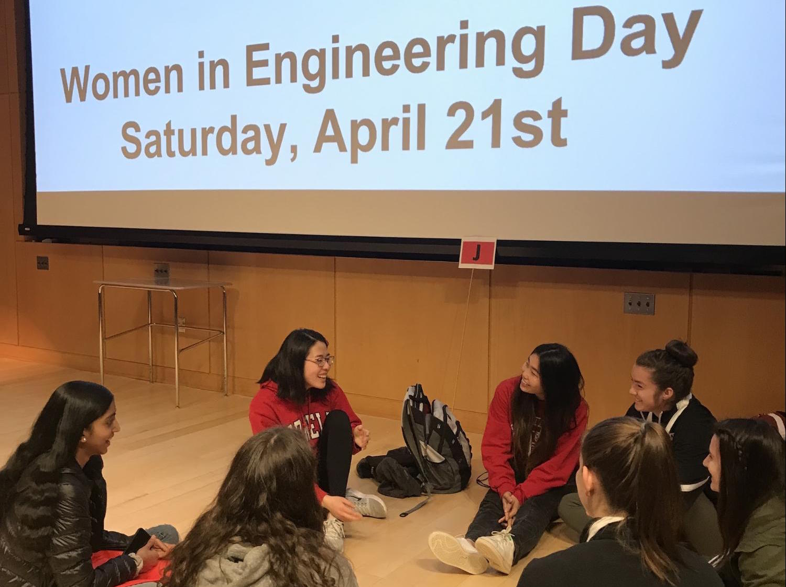

Outreach Educational Channel
Commmitte Members reaches out beyond the Ithaca community by teaching essential engineering concepts on their Youtube Channel.
Community Outreach
Committee Members connect with the local Ithaca community including, but not limited to, outreach at the Tompkins County Public Library, the Ithaca Sciencenter, Habitat for Humanity, and Into the Streets.
DiverSWEty
This committee is part of SWE’s initiative to welcome members from all backgrounds and identities. This includes the ongoing HeForSWE initiative, a nationwide movement to include male students in SWE as active participants in our organization’s activities, as well as initiatives to further support students from all gender identities and other underrepresented backgrounds. Members of this committee design programming to promote the goal of a supportive and inclusive environment for all engineering students through photo campaigns, socials, etc.
Girl Scout Day
Committee Members plan 4 Girl Scout outreach events. Committee is responsible for choosing a badge, planning the associated activities, reaching out to local GS troops, coordinating volunteers, and running the event on the day of.
Brownie Girl Scouts
Committee Members work with local Brownie Girl Scouts.
Cadette Girl Scouts
Committee Members work with local Cadette Girl Scouts
Junior Girl Scouts
Committee Members work with local Junior Girl Scouts.
School Outreach
Elementary School
Committee Members design interesting, hand-on science projects and coordinating volunteers to go to local elementary schools after school or during classroom time to teach children about engineering and science.
Middle School
Committee Members design interesting, hand-on science projects and coordinating volunteers to go to local middle schools after school or during classroom time to teach children about engineering and science. Additionally, chairs will work with local SWENext sections to engage the next generation of SWE members.
High School
Committee Members plan events for the high school mentorship program. Activities throughout the year are meant to introduce high school women to STEM majors and instill an interest in becoming involved in STEM activities. Committee will organize Cornell research lab visits, panels, and hands-on activities. Additionally, chairs will work with local SWENext sections to engage the next generation of SWE members.
Prospective Student Outreach
Members of this committee communicate with Engineering Admissions and plan exciting SWE events for visiting and newly accepted students in the College of Engineering. Such events include postcard writing sessions, communicating through emails with potential students, and helping organize our annual Women in Engineering Day for admitted students in the spring.

- 

Events (To be updated for 2019-2020 soon!!)
FALL 2018
Sept 15: Habitat for Humanity Build
Sept 24,25: Card Making for Patients at Upstate Golisano Children’s Hospital
Sept 29: Volunteering at Ithaca Children’s Garden
Sept 29, Oct 20, Nov 17: Tompkins County Public Library “The Maker is In” Robotics with SWE
Oct 5: Volunteers Serve Dinner at Loaves & Fishes
Oct 12: SWENext Meeting at Boyton Middle School
Oct 13: Brownie Girl Scout Day (Bridging the Gap)
Oct 14: Apple Picking for Friendship Donations Network
Oct 20: Invent It. Built It. at SWE National Conference
Oct 20: HeForSWE Pumpkin Carving
Oct 26: Campus Outreach Movie Night with AOE & SHPE
Oct 27: Into the Streets
Oct 28: Spooky Science at the Ithaca Sciencenter
Nov 10: Big Red Thon for Upstate Golisano Children’s Hospital
Nov 17: Junior Girl Scout Day (Cybersecurity)
Nov 27: Explore Engineering with South Hill Elementary’s 3rd Grade Class
Nov 27: Campus Outreach Chat & Chew with Female Professors
SPRING 2019 (More events will added soon!)
Jan 25: Mission Aerospace at the Ithaca Sciencenter
Jan 26: Junior FIRST Lego League Expo
Feb 4: Cards to Early Decision Admitted Women
Feb 5, 26 (bimonthly): SWENext Meeting at Boynton Middle School
Feb 9, Mar 2 (monthly): Science Olympiad at Boynton Middle School
Feb 9: Code Red Robotics Open House at Ithaca High School
Mar 9: CUrself as an Engineer Day
Mar 10, Apr 14: Tompkins County Public Library “The Maker is In” Robotics with SWE
Mar 12: Girl Scout Outreach at Cayuga Heights Elementary
Mar 15: Campus Outreach St. Patrick’s Celebration
Mar 16: Junior Girl Scout Day (Think like an Engineer, Journey in a Day)
Mar 16: Habitat for Humanity, Women Build Day
Mar 22: Engineering Challenge at South Hill Elementary
Mar 23: Dia de Ciencias with Cornell SHPE
Apr 6: Showtime at Ithaca Sciencenter
Apr 13: Habitat for Humanity, Women Build Day
Apr 15, 18, 19, 22, 25, 26: Women in Engineering Days for Admitted Female Students
Apr 28: Brownie Girl Scout Day (Think like an Engineer, Journey in a Day)